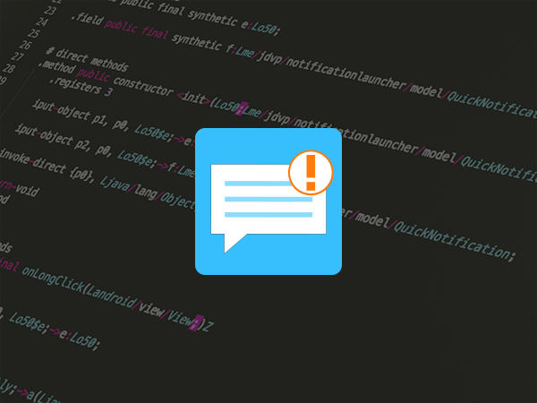
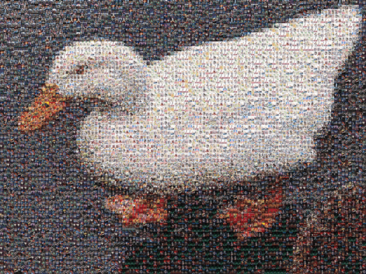
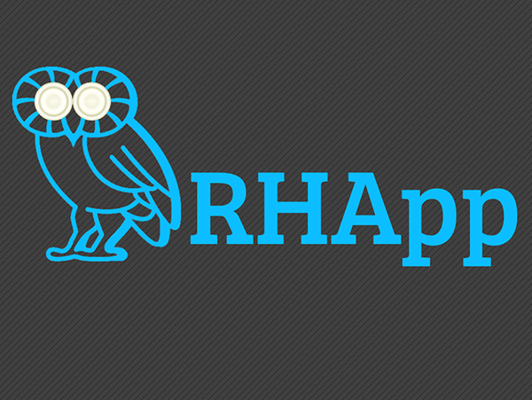
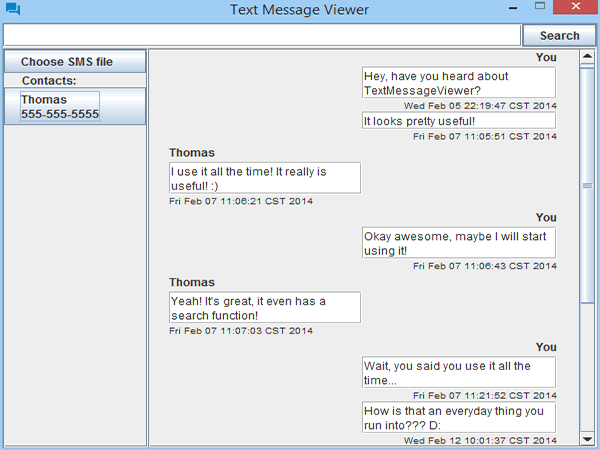

Professional Experience
I'm currently employed as a professional Android Developer. Although I'm a Texas native,
I've been living and working in Columbus, Ohio since I graduated from college.
I work at L Brands and focus my work on the PINK Nation and Victoria's Secret Android apps,
although I have had to work on the Bath & Body Works app on occasion.
Previously, I had been employed at JP Morgan working on their Chase Pay mobile application.
I helped shape its initial public release in November 2016 and continued work on it
until its 2.0 release.
Active Personal Projects
These are projects that I am actively engaged improving

Notification Launcher
Notification Launcher is an Android app that allows scheduling of notifications for any app
on your phone. It also can be used to share reminders from other apps.
See the Google Play Store Listing
for more details.

Animosaic
Animosaic is a web app that lets users create mosaics of images using the cover
art from multiple anime series. The duck mosaic above was made using the app.
You can check it out here!
Inactive Projects
These are projects that I am no longer working on for various reasons. If you happen to use any of them
though and have an idea for an update, feel free to reach out and let me know!
Statistexts
Statistexts is an Android application that allows users to see how responsive their contacts
are and how they compare to each other.
See more details on its official website.

RHApp
An Android application used by Rice University students to allow them to be more connected
to their Resident Health Associates. Created as a part of the HackRice 2015 hackathon.
More details can be found here.

TextMessageViewer
TextMessageViewer is an Java JAR executable that allows for users to view SMS backup
files generated by apps such as SMS Backup & Restore on their PC.
More info and download links can be found here.
Interests and Hobbies
My interests include Mobile Development, which explains my day job, and Web Development,
which I do as more of a hobby.
When I'm not programming, I like to try to stay active by hiking and visiting all of the Metro Parks
that Columbus has to offer. Since I'm stuck in a cubicle for hours every day, I also try to make
it to the gym as often as I can.
I also really like watching anime and playing video games! I really enjoy RPGs and some of my
favorite games I've played lately include Nier Automata, Horizon Zero Dawn, and Persona 5. I won
a Nintendo Switch in an arcade game (it's possible!) and have been playing it pretty often.